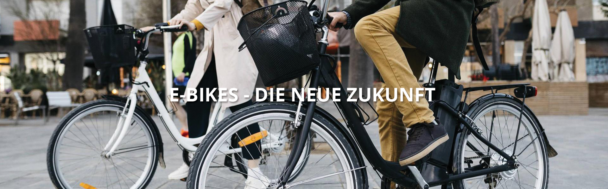
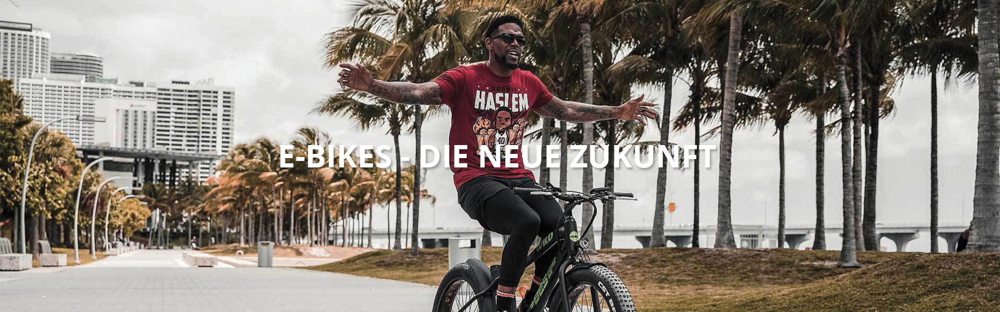

Das ist Greenbike - ein junges Unternehmen mit speziell für E-Bikes ausgebildeten Fachkräften, die sich gerne für Sie Zeit nehmen. Unser Betrieb zeichnet sich durch die persönliche Beratung in unserem Fahrrad-Shop, der praktischen und kostengünstigen Vermietung von E-Bikes und unserer Fachwerkstätte für E-Bike Wartung und Service aus. Frei nach unserem Leitsatz "Greenbike - Schnell und Günstig" gestaltet sich unser Geschäftsmodell. Flexibilität für jedermann, direkt im Univiertel, praktische Erreichbarkeit mit öffentlichen Verkehrsmitteln, sowie Parkmöglichkeiten sind vorhanden. Die Greenbike GmbH beschäftigt derzeit vier Mitarbeiter, die sich kompetent und zuverlässig um alle Ihre Fragen und Anliegen rund um das Thema E-Bike kümmern.

Wir bieten modernste E-Bikes an, von der Vermietung bis zum Kauf an, sowie eine hauseigene Fachwerkstätte zu Wartung und Service für Ihre E-Bikes
Unsere hochqualifizierten Mitarbeiter un unserem E-Bike Servicecenter arbeiten mit höchster Präzision daran, Ihre Kundenwünsche zu erfüllen. Vom einfachen Service bis zu Wartung. Weiteres bieten wir für unsere Kunden eine gratis Aufpumpstation für Ihre Fahrräder in unserem Haus an.
Unsere Vermietung spricht für sich, indem wir Flexibilität zu geringen Preisen mit speziellen Preisvorteilen verbinden. Sie können aus einer großen Auswahl an moderensten E-Bikes aus unserem weiten Produktsortiment wählen. Wir beraten Sie gerne, ihr Wunsch-E-Bike zum besten Preis für Sie zu finden.
Mit unseren generalüberholten und hochqualitativen E-Bike aus zweiter Hand erwerben Sie ein topaktuelles, neuwertiges E-Bike von Spitzenherstellern mit Bestpreisgarantie. Unsere E-Bikes werden von unserem hauseigenen Serviepersonal gewartet und geprüft, bevor Sie diese zum Vorzugspreis kaufen können. Wir bieten Ihnen auch die Möglichkeit, Ihr Wunsch-Rad vor dem Kauf Probe zu fahren, um sich so von der Qualtiät unserer Fahrräder zu überzeugen. Umweltfreundliche Fortbewegung, fachmännische Beratung, beste Preise - dass erhalten Sie nur bei Greenbike.

Wenn Sie in Graz unterwegs sind, denken Sie nicht, dass es hier nur öffentliche Verkehrsmittel gibt. Das E-Bike ist umweltfreundlich und bringt Ihnen viel Freude. Egal ob Sie überlegen, ein E-Bike zu kaufen oder einfach Ihren Urlaubsort auf eine ganz neue Art erkunden möchten - wir haben das passende E-Bike für Sie! Bei uns erwarten Sie eine Vielzahl an hochwertigen Marken E-Bikes. Wenn Sie sich unschlüssig sind, welches E-Bike am besten zu Ihnen passt, zögern Sie nicht uns zu kontaktieren. Wir helfen Ihnen gerne! Um sicherzustellen, dass wir an ihrem Wunschtermin das richtige Bike für Sie haben, rufen Sie uns an oder besuchen Sie uns in der Merangasse 82.

Wir bei Greenbike legen einen großen Wert auf Jugendliche, daher haben wir verschiedene Angebot für all diejenigen die Nachweisen können das sie studieren beziehungsweise in die Schule gehen. Sie bekommen dann eine Greenbike Karte mit dem man verschiedene E-Bikes günstiger mieten kann. Greenbike Mitglieder können auch bei verschiedenen Events mitmachen die über das ganze Jahr stattfinden und tolle Preise gewinnen!
Für mehr Fragen wenden Sie sich bei uns per E-Mail oder rufen Sie uns an!
| Greenbike Schüler/Studenten Angebot | ||
|---|---|---|
| E-Bike | Normalpreis | Angebot |
| CT Hybrid One | € ??,?? | € ??,?? |
| S Bear Rock | € ??,?? | € ??,?? |
| B Wave | € ??,?? | € ??,?? |